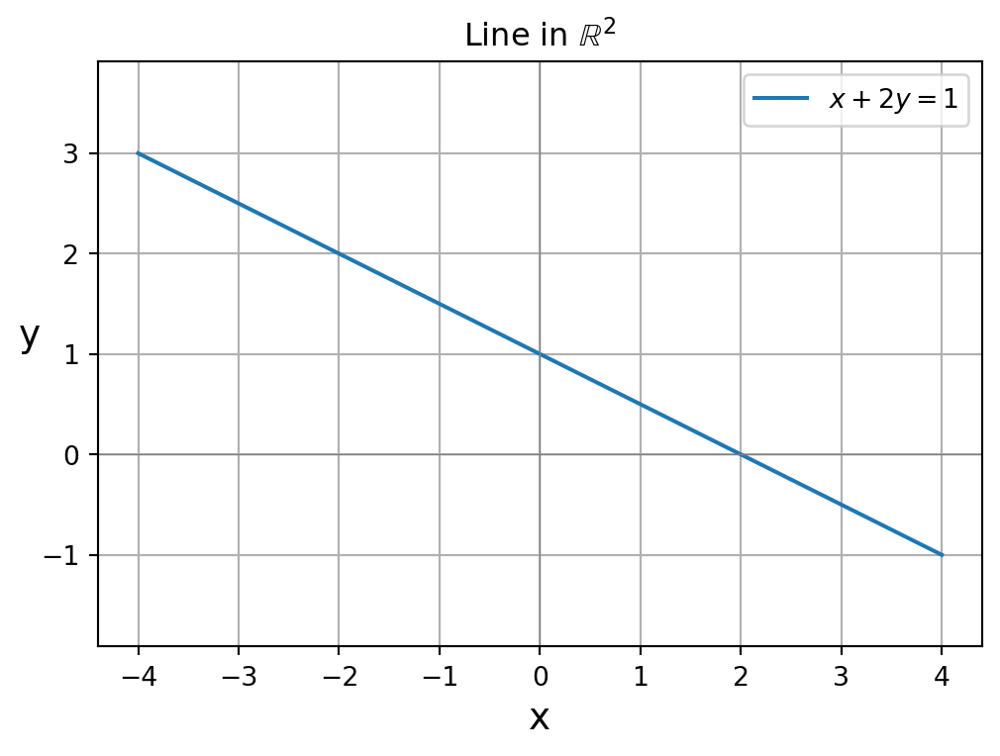
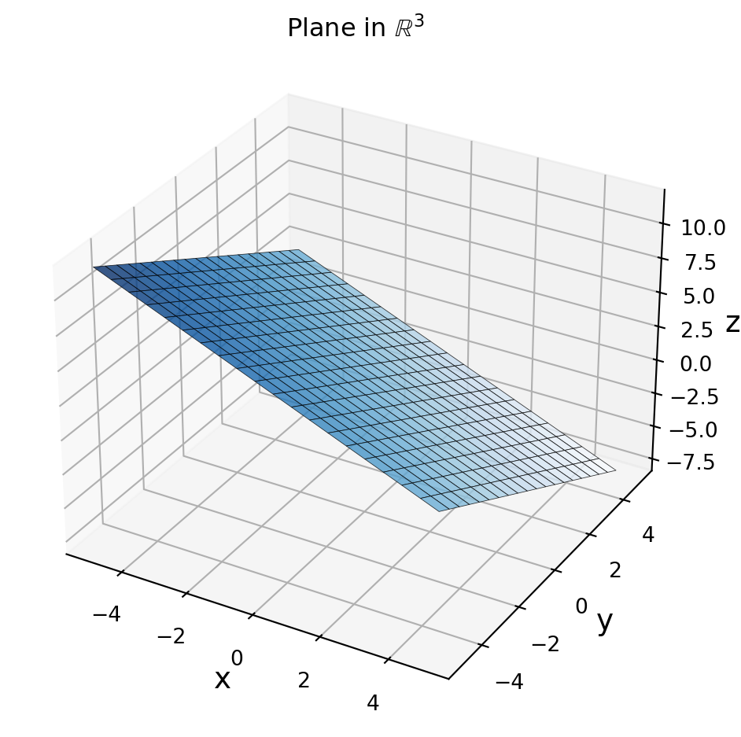
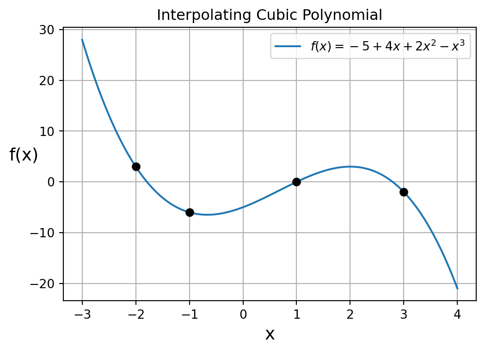
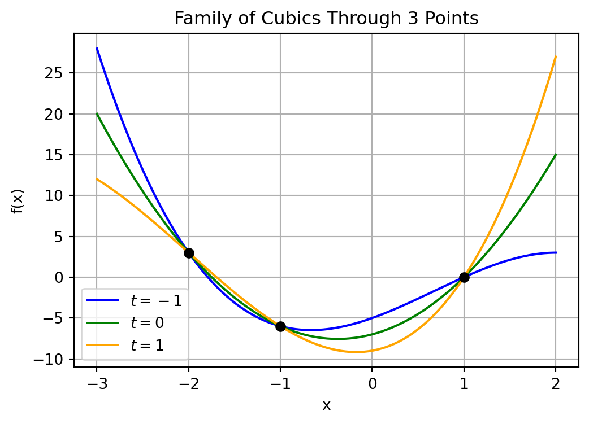

1.1 Introduction to Linear Systems
Linear Equations
The solution set of the equation
\[ x + 2y = 1 \]
is a line in the \(xy\)-plane.
The solution set of the equation
\[ x + y + z = 2 \]
is a plane in \(\mathbb{R}^3\).

The above line equation and plane equation are examples of linear equations.
Definition: Linear Equation
For given constants \(a_1, a_2, \ldots, a_n\) and \(b\) in \(\mathbb{R}\) we call
\[ a_1 x_1 + a_2 x_2 + \cdots + a_n x_n = b \] a linear equation in the variables \(x_1, x_2, \ldots, x_n\).
For \(n > 3\), graph of a linear equation is called a hyperplane in \(n\)-dimensional space.
Exercise: Which of the following are linear equations?
- \(2x_1 + 3x_2 = 4\)
- \(x_1 - x_1 x_2 = 2\)
- \(y_1 - 4y_2 + 2y_3 = 0\)
- \(w - x - 3y + z = 5\)
- \(x - 2\sqrt{y} = 4\)
Show Answer
Linear:
- \(2x_1 + 3x_2 = 4\)
- \(y_1 - 4y_2 + 2y_3 = 0\)
- \(w - x - 3y + z = 5\)
Nonlinear:
- \(x_1 - x_1 x_2 = 2\) (contains product of variables)
- \(x - 2\sqrt{y} = 4\) (contains square root of a variable)
Cubic Polynomial Interpolation
Let’s consider a data science application where linear equations with more 3 variables arise. Consider the problem of finding the cubic polynomial(s)
\[ f(x) = \beta_1 + \beta_2 x + \beta_3 x^2 + \beta_4 x^3 \]
with a graph that passes through the following points in the \(xy\)-plane:
\[ (-2, 3), \quad (-1, -6), \quad (1, 0), \quad (3, -2) \]
We seek values of the coefficients \(\beta_1, \beta_2, \beta_3, \beta_4\) such that \(f(x)\) satisfies:
\[ f(-2) = 3, \qquad f(-1) = -6, \qquad f(1) = 0, \qquad f(3) = -2 \]
For \(f(-2) = 3\) we plug \(x = -2\) into \(f(x) = \beta_1 + \beta_2 x + \beta_3 x^2 + \beta_4 x^3\) to get the linear equation:
\[ \beta_1 - 2 \beta_2 + 4 \beta_3 - 8 \beta_4 = 3 \]
Exercise: What linear equations do we get when plugging in the remaining 3 constraints \(f(-1) = -6\), \(f(1) = 0\), and \(f(3) = -2\)?
Show Answer
For \(f(-1) = -6\),
\[ \beta_1 - \beta_2 + \beta_3 - \beta_4 = -6 \]
For \(f(1) = 0\),
\[ \beta_1 + \beta_2 + \beta_3 + \beta_4 = 0 \]
For \(f(3) = -2\),
\[ \beta_1 + 3\beta_2 + 9\beta_3 + 27\beta_4 = -2 \]
Since the cubic must pass through all 4 points, our unknown coefficients \(\beta_1, \beta_2, \beta_3, \beta_4\) must satisfy the following system of equations:
\[ \begin{array}{ccccccccc} \beta_1 & - & 2 \beta_2 & + & 4 \beta_3 & - & 8 \beta_4 & = & 3 \\ \beta_1 & - & \beta_2 & + & \beta_3 & - & \beta_4 & = & -6 \\ \beta_1 & + & \beta_2 & + & \beta_3 & + & \beta_4 & = & 0 \\ \beta_1 & + & 3\beta_2 & + & 9\beta_3 & + & 27 \beta_4 &= & -2 \end{array} \]
We call a system of linear equations a linear system. One can show that the above linear system has the unique solution given by:
\[ \beta_1 = -5, \quad \beta_2 = 4, \quad \beta_3 = 2, \quad \beta_4 = -1 \]
Exercise: Verify by plugging in that the above assignment of variables is a solution of the linear system.
Show Answer
\[ \begin{array}{ccccccccc} -5 & - & 2 (4) & + & 4 (2) & - & 8 (-1) & = & 3 \\ -5 & - & 4 & + & 2 & - & -1 & = & -6 \\ -5 & + & 4 & + & 2 & + & -1 & = & 0 \\ -5 & + & 3 (4) & + & 9 (2) & + & 27 (-1) &= & -2 \end{array} \]
Since there exists a solution, we call the linear system consistent. Since the linear system has a unique solution,
\[f(x) = -5 + 4x + 2x^2 - x^3\]
is the unique cubic polynomial with a graph that passes through the given points.

As we will see in the next example, not all linear systems have a single unique solution.
Underdetermined Linear System
Consider the problem of finding the cubic polynomial(s)
\[ f(x) = \beta_1 + \beta_2 x + \beta_3 x^2 + \beta_4 x^3 \]
with a graph that passes through the following points in the \(xy\)-plane:
\[ (-2, 3), \quad (-1, -6), \quad (1, 0) \]
Since these 3 points are the first 3 points of the previous example, our coefficients \(\beta_1, \beta_2, \beta_3, \beta_4\) must satisfy only the first 3 equations of the previous linear system:
\[ \begin{array}{ccccccccc} \beta_1 & - & 2 \beta_2 & + & 4 \beta_3 & - & 8 \beta_4 & = & 3 \\ \beta_1 & - & \beta_2 & + & \beta_3 & - & \beta_4 & = & -6 \\ \beta_1 & + & \beta_2 & + & \beta_3 & + & \beta_4 & = & 0 \end{array} \]
We call the linear system underdetermined since the number of variables (unknowns) is larger than the number of equations (constraints). One can show that linear system has an infinite number of solutions which are given by:
\[ \beta_1 = -7 -2t, \qquad \beta_2 = 3 - t, \qquad \beta_3 = 4 + 2t, \qquad \beta_4 = t \]
where \(t\) is any real number.
Exercise: Verify by plugging in that the above assignment of variables is a solution of the linear system for any choice of \(t\).
Show Answer
\[ \begin{array}{ccccccccc} (-7-2t) & - & 2 (3-t) & + & 4 (4+2t) & - & 8 t & = & 3 \\ (-7-2t) & - & (3-t) & + & (4+2t) & - & t & = & -6 \\ (-7-2t) & + & (3-t) & + & (4+2t) & + & t & = & 0 \\ \end{array} \]
Since the linear system has an infinite number of solutions, there are an infinite number of cubic polynomials with a graph that passes through the given points. The figure below shows three such cubic polynomials corresponding to \(t = -1\), \(t = 0\), and \(t = 1\).

As we will see in the next example, some linear systems have no solutions.
Overdetermined Linear System
Consider the problem of finding the quadratic polynomial(s)
\[ f(x) = \beta_1 + \beta_2 x + \beta_3 x^2 \]
with a graph that passes through the \(4\) points
\[ (-2,3), \qquad (-1, -6), \qquad (1,0), \qquad (3,-2) \]
Finding the quadratic polynomial(s) corresponds to finding solutions to the linear system:
\[ \begin{array}{ccccccc} \beta_1 & - & 2 \beta_2 & + & 4 \beta_3 & = & 3 \\ \beta_1 & - & \beta_2 & + & \beta_3 & = & -6 \\ \beta_1 & + & \beta_2 & + & \beta_3 & = & 0 \\ \beta_1 & + & 3\beta_2 & + & 9\beta_3 & = & -2 \end{array} \]
We call the linear system overdetermined since the number of equations (constraints) is larger than the number of variables (unknowns).
Exercise: Show that \(\beta_2 = 3\) by subtracting the second equation from the third equation.
Show Answer
\[ 0 - (-6) = (\beta_1 + \beta_2 + \beta_3) - ( \beta_1 - \beta_2 + \beta_3) = 2 \beta_2 \]
We conclude that \(\beta_2 = 3\).
Exercise: Show that \(\beta_3 = -4\) by subtracting the first equation from the fourth equation and using the fact that \(\beta_2 = 3\).
Show Answer
\[ -2 - 3 = (\beta_1 + 3 \beta_2 + 9 \beta_3) - (\beta_1 - 2 \beta_2 + 4 \beta_3 ) = 5 \beta_2 + 5 \beta_3 = 15 + 5 \beta_3 \]
We conclude that \(\beta_3 = -4\).
Exercise: Show that \(\beta_1 = 25\) by plugging \(\beta_2 = 3\) and \(\beta_3 = -4\) into the first equation.
Show Answer
\[ 3 = \beta_1 - 2 \beta_2 + 4 \beta_3 = \beta_1 - 6 - 16 \]
We conclude that \(\beta_1 = 25\).
Plugging \(\beta_1 = 25\), \(\beta_2 = 3\), and \(\beta_3 = -4\) into the second equation gives:
\[ \beta_1 - \beta_2 + \beta_3 = 25 - 3 - 4 = 18 \neq -6 \]
We conclude that the linear system how no solution and thus no quadratic polynomial has a graph that passes through the given points. Since there exists no solution, we call the linear system inconsistent.
General Linear Systems
Now that we have seen specific example of linear sytems, let’s look at the general definition:
Definition: Linear System
A system of \(m\) linear equations in \(n\) variables \(x_1, x_2, \ldots, x_n\) is called an \(m \times n\) linear system.
\[ \begin{aligned} a_{11}x_1 + a_{12}x_2 + \cdots + a_{1n}x_n &= b_1 \\ a_{21}x_1 + a_{22}x_2 + \cdots + a_{2n}x_n &= b_2 \\ \vdots \\ a_{m1}x_1 + a_{m2}x_2 + \cdots + a_{mn}x_n &= b_m \end{aligned} \]
- An assignment of the variables \(x_1, x_2, \ldots, x_n\) is a solution of the linear system if it satisfies all \(m\) equations simultaneously.
- A linear system that has at least one solution is called consistent.
- A linear system with no solution is called inconsistent.
- A system is underdetermined if there are more variables than equations (\(n > m\)).
- A system is overdetermined if there are more equations than variables (\(m > n\)).
Here are some questions about linear systems that we will soon be able to answer.
- What are the possible sizes of the solution set of a linear system?
- How do we tell if a linear system is consistent?
- How can we tell if a consistent linear system has a unique solution?
- How do we find all solutions of a consistent linear system?
- How can we find an approximate solution to an inconsistent linear system?
The answers to these questions are not obvious. For example, given what we have seen so far about linear systems it seems intuitive to conclude that any overdetermined linear system is inconsistent. Since the following linear system is consistent with solution \(x = 1\), \(y=1\), that intuition is incorrect.
\[ \begin{aligned} x + y &= 2 \\ x - y &= 0 \\ 2x + 3y &= 5 \end{aligned} \]
To answer these questions and more we will first need to learn about matrices and vectors. For example, a linear system can be written much more consisely using matrices and vectors as:
\[ A \mathbf{x} = \mathbf{b} \]
where:
\[ A = \begin{bmatrix} a_{11} & a_{12} & \cdots & a_{1n} \\ a_{21} & a_{22} & \cdots & a_{2n} \\ \vdots & \vdots & \ddots & \vdots \\ a_{m1} & a_{m2} & \cdots & a_{mn} \end{bmatrix}, \quad \mathbf{x} = \begin{bmatrix} x_1 \\ x_2 \\ \vdots \\ x_n \end{bmatrix}, \quad \mathbf{b} = \begin{bmatrix} b_1 \\ b_2 \\ \vdots \\ b_m \end{bmatrix} \]
and
- \(A\) is called the coefficient matrix
- \(\mathbf{x}\) is called the solution vector
- \(\mathbf{b}\) is called the right-and-side vector